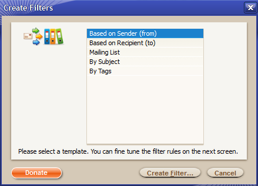
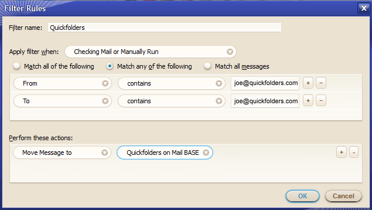

quickfolders
| Home Installation Version History FAQ + Tips Support QuickFolders! Screenshots Bugs + Feature Requests quickFilters Menu On Top |
News
February 2016: I have created a new YouTube channel with tips and tricks such has how to get started with Addons.
- Version 3.12Independent Palette types for tab states.
- Version 3.8.1Tabs remember the selected QuickFolders category
- Version 3.6 Palette rewrite and paint mode.
- Version 3.3 Filter List Enhancements
- Version 3.1 Move Folders with SHIFT
- Version 3.0 Filter Learning Tool
- Version 2.12 New Icons
- Version 2.11 Multiple Category Support
- Version 2.9.3 Finds and reuses open Tabs
QuickFilters
This is a new extension of mine that extends some of the new filter behavior already seen in QuickFolders and brings it to the folder tree. It can be used independantly of, or in conjunction with quickFolders.
The Filter Assistant
With this, it is very easy to create new filters very quickly.
I actually invested 2 weeks of work over the last Christmas Holidays in order to write the "Filter Wizard"; this will prefill the destination folder for you after you have dragged the email into one of the folders in the folder tree.
- Click on the quickFilters button on the main toolbar

- The button will change depicting a glowing wheel instead of the mail icon and there will be sliding notification:

- Drag an email into a folder on the left hand folder tree. This will trigger the Create Filter Assistant.
 - select a template (e.g. "based on Sender") and click [Create Filter...] - in the example I have pulled an email into the QuickFolders folder
- Next, the Edit Filter dialog is displayed - as you can see it already tries to "guess" what you want the filter to do when it should be applied,
based on the email that you dragged to the folder:

Since in this case I chose "Based on Sender", it will pull all conversations from and to joe@quickFolders.com into the QuickFolders folder. No need to select the folder (as it has been done automatically) or to enter any condition (this is based on the template that you have chosen). - Now tweak the filter as usual and click Ok to save it (and try it out in the Filter List)
- You can also click Cancel to not create the filter
- in the last step Thundebird's list of filters is shown.

- You can repeat the process from step 2 to create more filters
- When you're done, click the filter button again to disable "Filter Wizard" mode.
The Message Filter List
I also created additional functions that I added to the filter list dialog - I created these after it had become a simple thing to create many filters (as the list became too long to handle without the search function).

The biggest new feature here is the addition of a Search box, which allows filtering the number of results
Also you can now move the filter to the top of the bottom of the list. This is actually significant as the order you see on screen is the same as the order in which the filters are executed. This also means, if a filter on the top moves a message from the inbox then the filters below will not get a chance to execute on this message; as the filters are only executed on messages in the inbox, they will simply be ignored. Therefore it is very important that it remains easy to re-order the relative positions of the filters. This also works while the search box is active.
Contributions
Keep free, open source software independent.
Important note: the donations for quickFilters will currently go via the QuickFolders project.
This is until the extension has been fully reviewed and I get a new Mozdev site for it.
If you want to help accelerate this process, please spread the word and leave positive reviews
on the AMO page for quickFilters.
|
I love quickFilters - it makes working with filters a breeze! Yes! It makes me more productive so I want to buy you a coffee! Any Questions? If you actually have donated already or only like freebies (yes, there is them...) you can also disable this page. |
Do you suggest any amount?
US$ donations: we suggest 10$ as that seems to be be a what most people like to donate - but of course smaller and greater amounts are always welcome.
Euro donations: 10 Euros will be considered generous. Some people have given 50$ some 2$, but anything is welcome.
Your tip is important to make QuickFilters even more excellent!
But I don't like / never use Paypal!
Just send me an email, and I give you my address for a cheque or note.
Free Software, Yayh!!
What's the meaning of this free software ??
Free as in Free Speech, not as in Free Beer.
I think the most important aspect on free software is that it is a political statement to avoid the pitfalls of proprietary, monopoly driven software that coined terms such as "Embrace, Extend and Extinguish" and the innovation crippling model of patenting software (for further reading, please see links below). At the moment there is a conflict (I almost wrote war) between the old proprietary model of software and the Free Software Concept, and its you, the users who will really decide where the future will take us. By downloading the Mozilla products and extensions by independant software developers, like QuickFolders, you are actively helping the cause.
The "free" Model

As users, we like to use the software the way we want, and we more or less expect it to be free of charge. The question is what do the commercial software vendors make of this? Since the advent of facebook is a shift of users (and their data) from being the customers becoming the merchandise, and the corporations becoming the customer. This is because even the best community sites cannot operate without profit. The web is already overfraught with advertisement and data mining - The alternative is truly Free software that is funded by donations.
there is an excellent description of this concept here:
Quote: “Free software” is a matter of liberty, not price. To understand the concept, you should think of “free” as in “free speech,” not as in “free beer.”
Free software is a matter of the users' freedom to run, distribute, study, change and improve the software.
Some Further Reading
- Richard Stallman - What is free software? - Youtube
- Free Software Definition
- Embrace, Extend and Extinguish - Wikipedia
- Patent Absurdity - How software patents broke the system
- The Cathedral and the Bazaar - an article about the philosphy behind the Open Source development model
- An in depth Stallman interview on free software and software patent - Youtube
- Open Source - Wikipedia
- The Browser Wars - Wikipedia